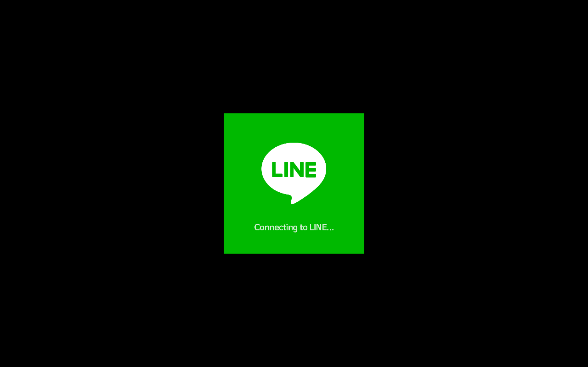
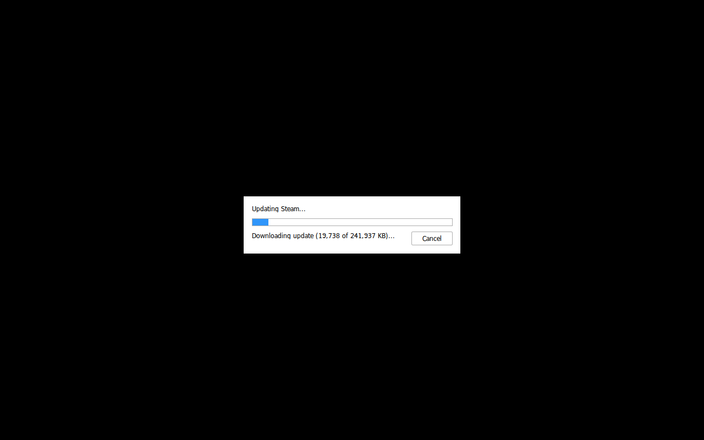
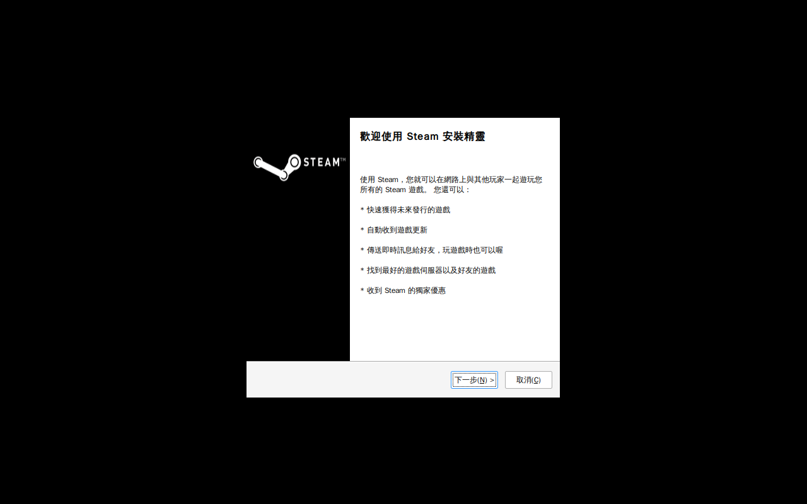

StrawNT
NTW8 Golden Closeout — line.exe + steam.exe
version 0.7.1.71
engine proton-ge@GE-Proton11-3
backend=wine
powered by Wine
2026-08-07T21:11:23Z
git e341da3e9
launch_mode=steam_exe
status: PASS · mode: real
Strict matrix
| App | Status | install | launch | visible_ui | login | window |
|---|
| line.exe | PARTIAL | PASS | PASS | PASS | UNKNOWN | 0xe00001 "Banner": ("steam_proton" "steam_proton") |
| steam.exe | PARTIAL | PASS | PASS | PASS | UNKNOWN | 0x1000001 "Steam": ("steam_proton" "steam_proton") |
Real window evidence

line.exe / LineLauncher — 0xe00001 "Banner": ("steam_proton" "steam_proton") 306x306+487+247 +487+247

steam.exe client (launch=PASS evidence) — 0x1000001 "Steam": ("steam_proton" "steam_proton") 394x104+443+357 +443+357

SteamSetup install-UI only (NOT steam.exe launch) — 0x1000001 "Steam 安裝": ("steam_proton" "steam_proton") 497x444+391+187 +391+187
Honesty
- App rows remain PARTIAL: login / all_games UNKNOWN — not claimed.
ranked_pass_claimed=false — no ranked / official anti-cheat claim.- Top-level PASS means declared-scope evidence is complete — not full Windows.
- mode=
real (Xvfb + xwininfo + PNG) — not simulated.
- steam.exe
launch=PASS requires launch_mode=steam_exe + staged Steam.exe window; SteamSetup alone is insufficient.
Prior stages
- ntw0-contract-legal: PASS
- ntw1-vendor-engine: PASS
- ntw2-shell-electron: PASS
- ntw3-optimize: PASS
- ntw4-win32-ipc: PASS
- ntw5-app-manager: PASS
- ntw6-sysapps: PASS
- ntw7-packaging: PASS
Evidence JSON: tests/strawnt/output/ntw8-golden.json · provenance mirrors JSON atomically